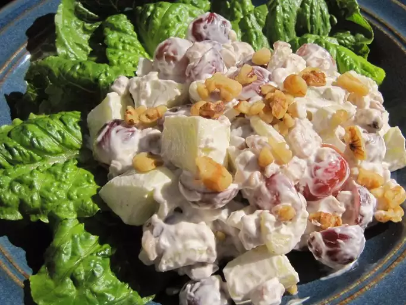
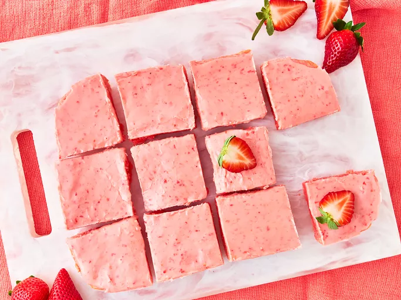

Receitas de Odin
Página Inicial

Lasanha feita em camadas de massa intercaladas com molho de carne moída, molho de tomate e bastante queijo. Finalizada com uma generosa cobertura de queijo e levada ao forno até gratinar.
Ingredientes da lasanha:
- Massa (pré-cozida ou fresca)
- Carne moída (bovina ou mista)
- Molho de tomate
- Azeite ou óleo (para refogar)
- Cebola e alho (para refogar)
- Queijo mussarela
- Queijo parmesão ralado
- Molho branco (opcional)
- Sal e pimenta a gosto
Etapas para o preparo:
- Molho de carne: Refogue cebola e alho, adicione carne moída, tempere e cozinhe. Junte o molho de tomate e deixe apurar.
- (Opcional) Molho branco: Derreta manteiga, adicione farinha, mexa bem e acrescente leite aos poucos até engrossar. Tempere.
- Montagem: Em um refratário, alterne camadas de molho, massa e queijo. Repita até terminar, finalizando com queijo.
- Forno: Leve ao forno a 180 °C por 30 min coberto com papel alumínio. Retire o papel e gratine por mais 10 a 15 min.
- Descanso: Espere 5 min antes de servir.

Uma receita clássica e refrescante feita com maçãs em cubos, uvas, nozes e um molho cremoso à base de maionese (ou iogurte). É levemente doce, crocante e perfeita como entrada ou acompanhamento.
Ingredientes da salada:
- Maçãs (verdes ou vermelhas)
- Uvas (preferencialmente sem sementes)
- Nozes picadas
- Maionese (ou iogurte natural, para versão mais leve)
- Suco de limão (para não escurecer as maçãs)
- Folhas verdes (opcional, para servir)
Etapas para preparar:
- Corte as maçãs em cubos e regue com limão
- Misture com uvas cortadas ao meio e nozes picadas
- Adicione maionese (ou iogurte) e mexa bem
- Sirva sobre folhas verdes e finalize com nozes extras

Brownies de morango feitos com mistura para bolo de morango, ovos e óleo, assados até ficarem firmes. Finalizados com uma cobertura cremosa de morango feita com açúcar de confeiteiro, morangos amassados e baunilha.
Ingredientes do Brownie:
1° etapa: Massa
- 1 caixa de mistura para bolo de morango
- 2 ovos
- 1/3 xícara de óleo vegetal
2° Etapa: Cobertura
- 1 xícara de açúcar de confeiteiro
- 2–3 morangos amassados
- 1/2 colher de chá de essência de baunilha
Etapas para o preparo:
- Pré-aqueça o forno a 180 °C e unte uma forma pequena
- Misture a massa : em uma tigela, misture a mistura para bolo, ovos e óleo até formar uma massa espessa
- Despeje na forma e espalhe uniformemente
- Asse por 20–25 minutos , ou até firmar. Deixe esfriar
- Prepare uma cobertura: misture o açúcar de confeiteiro, morangos amassados e baunilha até formar um creme liso
- Cubra os brownies já frios com a cobertura e leve à geladeira por alguns minutos antes de cortar